صفحة الفراعنة هي نافذة تاريخية مميزة تأخذنا في رحلة عبر حضارة مصر القديمة، إحدى أعظم الحضارات التي عرفها التاريخ. تستعرض الصفحة حياة الفراعنة، وإنجازاتهم في مجالات العمارة، والطب، والزراعة، والفلك، بالإضافة إلى أشهر الملوك مثل توت عنخ آمون ورمسيس الثاني وكليوباترا. كما تسلط الضوء على المعابد والأهرامات والآثار التي ما زالت شاهدة على عظمة هذه الحضارة حتى اليوم، بهدف التعرف على تراث الأجداد وفهم أهمية الحضارة الفرعونية في بناء تاريخ مصر والعالم.
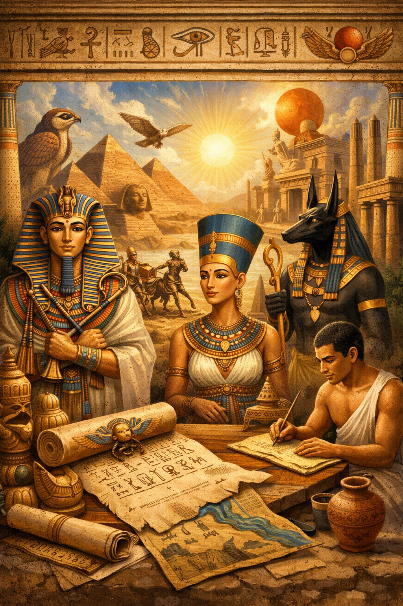
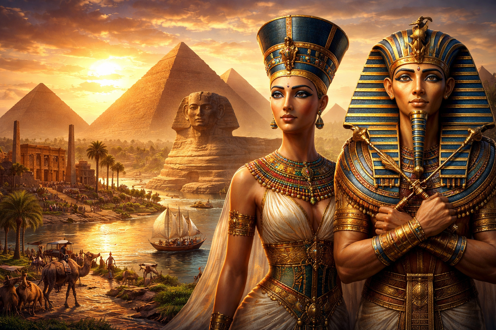
يعتبر الفراعنة حكام مصر القدماء، حيث عاشوا في ثراء مجيد وزينوا أنفسهم بالذهب، وامتاز النظام الفرعوني بالاستبداد، بالإضافة إلى أنّ مجتمعاتهم امتازت بالزراعة والصيد.
كلف الفراعنة ببناء الأهرامات العظيمة لتحضير أنفسهم للحياة بعد الموت.
ازدهر الفن والثقافة والبناء بسبب حركة التجارة النشطة.
ابتكر الفراعنة الكتابة الهيروغليفية لتوثيق الأحداث والطقوس.
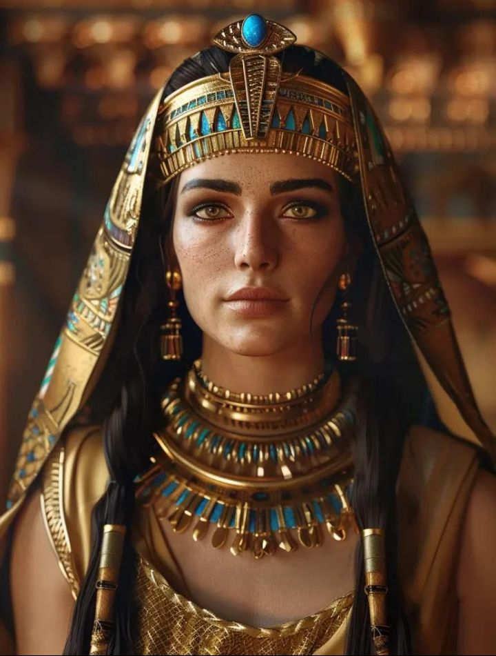
حكمت كليوباترا السابعة مصر، وواجهت تحديات كبيرة لاستعادة حكمها بمساعدة جيش روماني بقيادة يوليوس قيصر.
تعرف علي المزيد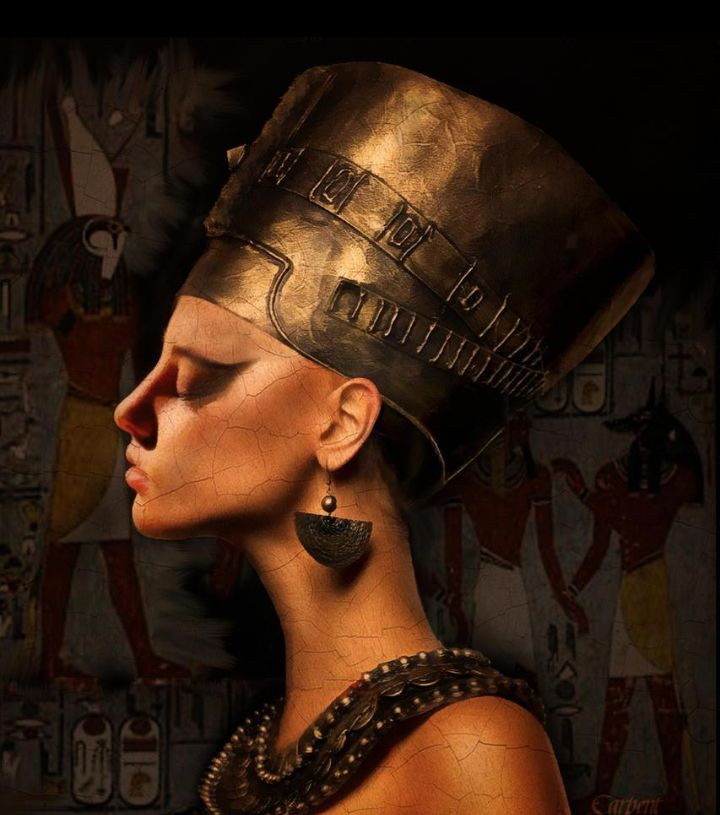
الملكة ميريت نيث من أوائل النساء اللاتي حكمن مصر القديمة وتعتبر مثالًا على قوة المرأة في التاريخ المصري
تعرف علي المزيد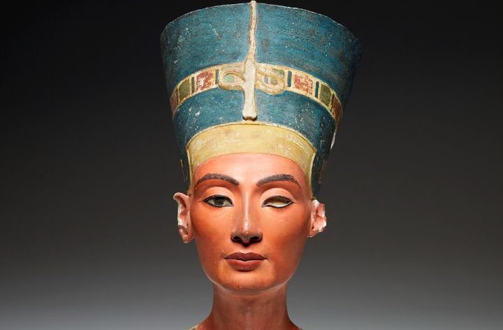
نفرتيتي كانت زوجة أخناتون، وهي من أشهر الملكات التي شاركت في حكم مصر القديمة وكان لها دور هام في العبادة
تعرف علي المزيدعاش عاش المصريون القدماء في تنظيم اجتماعي صارم مع الفرعون في القمة، واعتقدوا في الحياة الآخرة حيث قاموا ببناء المقابر وتحنيط الموتى
عاش المصريون في قرى زراعية وكان لديهم نظام اجتماعي هرمي.
الفرعون هو الحاكم المطلق وكان له سلطة في جميع المجالات
أمن الفراعنة بالحياة الأبدية وكان لديهم طقوس دينية معقدة
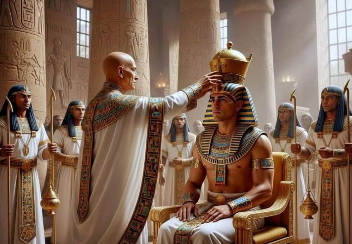
الفرعون يُعتبر إلهًا حيًا وكان يتولى المسؤولية الروحية والعبادة للآلهة.
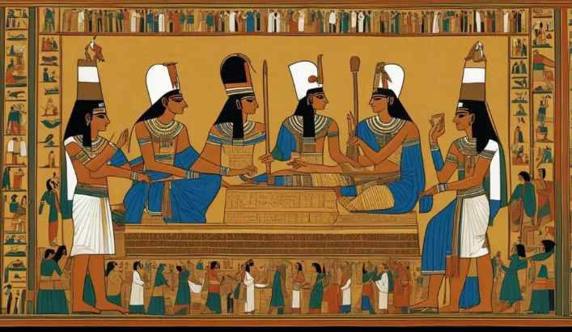
الفرعون يدير الدولة ويشرف على الضرائب والجيش
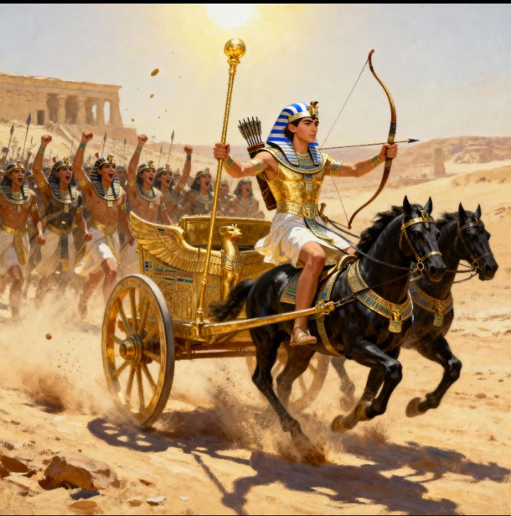
الفرعون هو القائد الأعلى للجيش وكان يدير الحروب وحماية الحدود
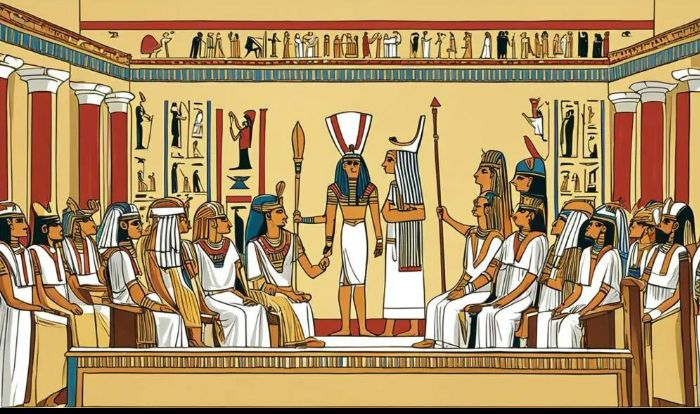
الفرعون هو أعلى سلطة قضائية في مصر القديمة.
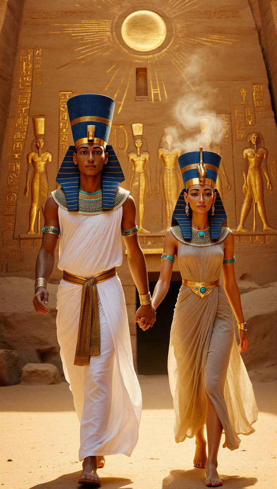
الرجال كانوا يرتدون تنورة قصيرة تسمى الشنديت، وكانت تُربط حول الخصر وتزين بالزخارف في الطبقات الغنية. النساء كنّ يرتدين فستانًا طويلًا ضيقًا يصل إلى الكاحل غالبًا من الكتان الأبيض
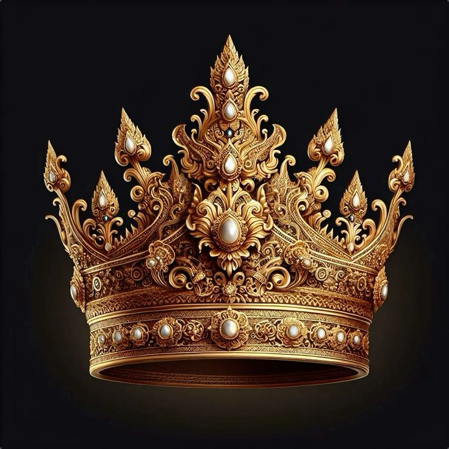
تاج الفرعون (Pschent) يجمع بين التاج الأبيض لمصر العليا والتاج الأحمر لمصر السفلى. كان رمزًا للوحدة والسيادة. بالإضافة إلى التاج الأزرق (Khepresh) الذي كان يُرتدى أثناء الحروب.
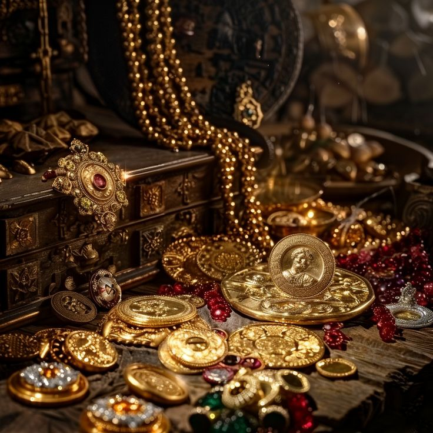
استخدم الفراعنة الذهب والفضة والأحجار الكريمة مثل اللازورد والفيروز لتصميم الحلي والأقنعة التي ارتدوها. كانت الحلي جزءًا مهمًا من حياتهم اليومية.
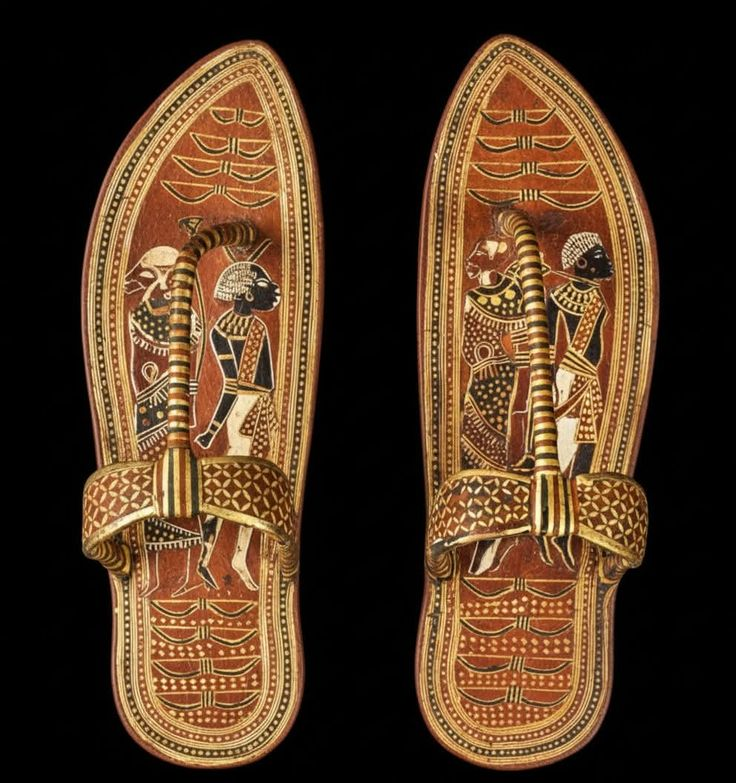
ارتدى الفراعنة صنادل غالبًا من الجلد أو القصب. كما كانوا يستخدمون الكحل لتحديد العيون وكانوا يستخدمون الزيوت العطرية لترطيب بشرتهم.